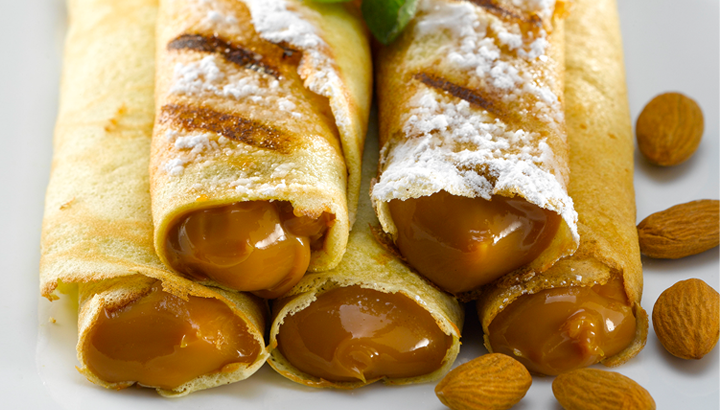

Recetas de panqueques con manjar

ingredientes
- 1 1/2 Taza de leche semidescremada
- 2 Huevos
- 1 Cucharada de aceite
- 1 1/2 Taza de harina cernida
- 12 Cucharadas de manjar NESTLÉ®
pasos
- Junta todos los ingredientes en el jarro de una juguera vertiendo primero los líquidos como la leche, huevos y aceite y al final los secos (de este modo será más fácil integrar todo), menos el manjar NESTLÉ®. Procesa a velocidad media durante unos segundos hasta conseguir un batido homogéneo.
- Luego calienta una sartén de teflón o antiadherente de diametro mediano, vierte ¾ de un cucharón y distribuye por toda la sartén con movimientos circulares e inclinados con el mango de la sartén. Cocina durante unos segundos hasta dorar sus bordes y voltea. Cocina unos segundos mas y repite el procedimiento hasta acabar la mezcla.
- Una vez listos, rellénalos uno a uno con una cucharada de manjar NESTLÉ® y enróllalos sobre sí mismos, espolvorea azúcar flor y sírvelos de inmediato fríos o calientes como más te guste.
Regresar